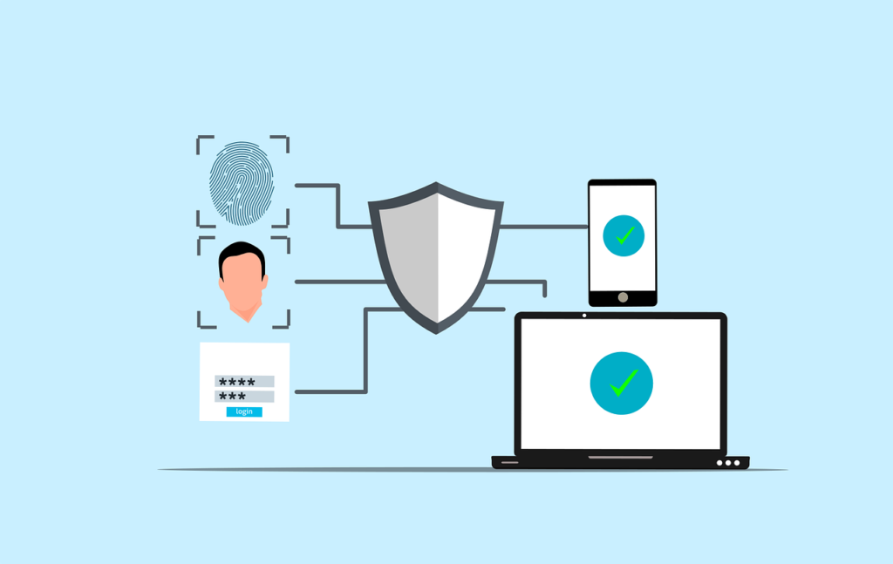
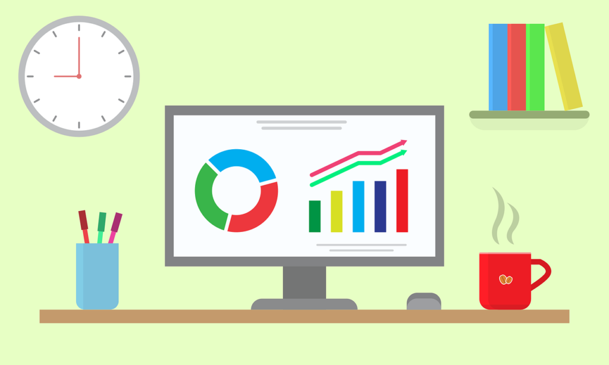

Technology advice without the noise.
Plain-language IT guidance for Tasmanian businesses, community organisations, and individuals.
Practical technology advice for Tasmanian teams.
Security, device, scam, and productivity guidance.
 IT Management
IT Management
Buying Used Technology: 8 Checks Before You Spend
Used technology can be good value, but only when support life, reset status, security, battery health, and management fit the job.

CybersecurityWhat the U.S. Cyber Trust Mark Means for Smart Device Buyers
The Cyber Trust Mark can help buyers compare smart-device security, but safe setup still depends on updates, accounts, and network design.
 Cybersecurity
Cybersecurity
Mobile App Security: 10 Checks Before You Tap
Mobile app security improves when app permissions, passwords, MFA, updates, Wi-Fi habits, and cloud sync are treated as one system.
New TechnologyTime for a Device Upgrade? 7 Signs to Watch
A device upgrade is due when support, speed, battery health, repairs, security controls, or changing work demands make the old device costly.
 Productivity
Productivity
How Much Storage Do You Need on a Laptop, Phone, or Work PC?
The right storage size depends on offline work, shared cloud storage, local files, and backup strategy rather than raw capacity alone.
 Cybersecurity
Cybersecurity
Malware vs Ransomware: What Is the Difference?
Ransomware is a type of malware, but it needs broader recovery planning because it is designed to create operational and financial pressure.
New TechnologyAI at Work: 7 Risks Small Teams Should Plan For
AI at work is useful when it is governed: approved tools, clear data rules, permission reviews, and human checking matter more than hype.
 Productivity
Productivity
How to Organise Your Devices for Better Productivity
A productive device setup has a rhythm: clear file homes, managed passwords, intentional notifications, updates, support, and recovery.
 Cybersecurity
Cybersecurity
Ransomware Response: How to Limit the Damage
Ransomware resilience depends on limiting entry, restricting spread, protecting backups, and practising the first-hour response before an incident.
 Cybersecurity
Cybersecurity
How to Prevent a Data Breach: 10 Practical Controls
Data breach prevention is a set of practical habits: know where data lives, limit access, require MFA, patch systems, secure sharing, and test recovery.
CybersecurityHow to Spot Hidden Malware on Your Computer or Phone
Hidden malware often shows up through subtle device changes and suspicious account activity rather than obvious warning screens.
 IT Management
IT Management
Secure File Storage and Transfers for Small Teams
Secure file storage works when each platform has a clear role, access is named, accounts are protected, and recovery is tested.
Business ContinuitySecure Data Backup: Best Practices for Small Business
A secure backup plan starts with recovery priorities, protects cloud and local data, separates credentials, and tests restoration regularly.
 Cybersecurity
Cybersecurity
Common Cyber Threats to Watch and How to Avoid Them
The most common cyber threats are still best reduced by practical controls: MFA, password management, patching, backups, segmentation, and reporting.
CybersecurityCan Password Managers Be Hacked? A Practical Risk Guide
Password managers can be targeted, but a well-configured vault is usually far safer than reused passwords, spreadsheets, or shared inboxes.

ProductivityAI Tools for Office Productivity: Use Them Safely
AI productivity works best when teams choose fewer tools, govern data properly, and start inside existing Microsoft 365 workflows.
 New Technology
New Technology
What Is Blockchain and Does It Matter for Small Business?
Blockchain is a specialised shared-ledger technology that can be useful in narrow trust problems, but most small-business workflows do not need it.
CybersecurityEncryption Explained for Everyday Business Use
Encryption protects data in transit, at rest, inside password vaults, and in backups, but it only works well with good key management.
 Productivity
Productivity
Windows 11 Settings That Improve Productivity and Security
Windows 11 productivity improves when updates, notifications, file storage, encryption, layouts, and remote support are configured as one baseline.
New TechnologyAI at Work Trends: What Small Businesses Should Do Next
AI at work is shifting from experimentation to governance, making approved tools, data quality, meeting records, training, and trust essential.
 Cybersecurity
Cybersecurity
IoT Security: Safer Smart Devices for Homes and Offices
IoT security improves when smart devices are chosen for supportability, isolated on the network, patched, and managed like real assets.
 Cybersecurity
Cybersecurity
How Password Managers Protect Your Accounts
Password managers protect accounts by making unique passwords, safer sharing, phishing resistance, recovery codes, and offboarding practical.
CybersecurityThreat Exposure Management: Finding IT Gaps Before Attackers Do
Threat exposure management gives businesses a ranked view of risky accounts, assets, public systems, permissions, backups, and network paths.
Home TechnologySmart Home Setup: 10 Tips for a Safer, Smoother Experience
A smart home feels seamless when Wi-Fi, device compatibility, network separation, account security, routines, and documentation are planned together.
 Cybersecurity
Cybersecurity
Cyber Hygiene Checklist for Safer Everyday Technology
Good cyber hygiene is a repeatable routine: protect identities, patch quiet systems, clean permissions, test backups, segment networks, and normalise reporting.
CybersecurityData Breach Notice? 8 Steps to Protect Yourself
A breach notice needs a calm response: confirm the notice, secure passwords and MFA, check accounts, watch identity risk, and expect follow-on scams.
Have a technology question?
Send us the context and we will give you practical next steps.